손실을 재고, 기울기의 반대로 한 걸음
— 신경망의 학습
이 자료는 신경망의 학습 교안 한 권을 끝까지 담았습니다
"P1에서는 AND의 가중치 (0.5, 0.5, 0.7)를 사람이 정했습니다. 가중치가 수만 개라면, 신경망은 그 값을 어떻게 스스로 찾을까?"
학습의 뜻, 오차제곱합·교차 엔트로피, 원-핫과 로그, 배치·SGD·미니배치, 정확도를 손실로 못 쓰는 이유
수치 미분, 중앙 차분, 편미분과 기울기, 경사 하강법과 학습률, 신경망의 기울기 행렬
학습 4단계, 학습 스크립트, TwoLayerNet 코드를 한 줄씩, 작은 예로 1회 갱신
전체 정리, 용어, 교안 확인 필요, 예상 문제(풀이는 눌러서 보기), 단어장
앞 교안 P1(퍼셉트론과 인공신경망)의 소프트맥스, 시그모이드, a = xW + b, 배치 처리가 이 교안에서 다시 쓰입니다. 교안 마지막 두 쪽(Thank You, References)은 내용이 없어 뺐습니다. 참고문헌은 사이토 고키 『밑바닥부터 시작하는 딥러닝 1』(리마스터판, 2025, 한빛미디어)입니다.
왜 배우고, 어디에 힘을 줄까
P1은 가중치가 주어졌을 때 입력에서 출력을 계산하는 과정(순전파)이었습니다. 이 교안은 그 가중치를 데이터로부터 자동으로 찾는 방법입니다. 손실 함수로 "얼마나 틀렸는지"를 재고, 미분으로 "어느 쪽으로 바꾸면 줄어드는지"를 구해 조금씩 고칩니다.
| 구분 (추측) | 교안 쪽 | 섹션 | 무엇을 할 수 있으면 되나 |
|---|---|---|---|
| 꼭 이해 | 1, 9–10 | 01, 09–10 | 학습 = 손실을 최소화하는 매개변수 찾기. 정확도·계단 함수는 기울기가 거의 모든 곳에서 0이라 학습에 못 씀 |
| 식의 뜻 | 2–4 | 02–04 | 오차제곱합·교차 엔트로피가 언제 커지고 언제 작아지는지, 원-핫 t, −log y의 모양, N으로 나누는 이유 |
| 구분 | 5–8 | 05–08 | 배치·SGD·미니배치에서 1 에폭 = 몇 번의 반복(갱신)인지: 1, n, n ÷ b |
| 방향 | 11–17 | 11–17 | 기울기의 부호와 갱신 방향, 중앙 차분, 학습률이 크면 발산·작으면 느림, 기울기 행렬의 모양 = W의 모양 |
| 코드 흐름 | 18–23 | 18–24 | 코드가 학습 4단계(미니배치 → 기울기 → 갱신 → 반복)의 어디에 해당하는지, 배열 모양 |
기말 정보(사용자 확인): 범위는 퍼셉트론 교안부터, 계산 문제는 없을 예정입니다. 그래서 식은 뜻과 방향을 먼저 쓰고, 손계산은 "(보충) 이해용 계산"으로만 넣었습니다. 수업 필기와 교수님 말씀은 아직 없어서 위 구분은 모두 추측입니다.
미리 짚고 갈 개념 ① — P1과 중간 범위에서 가져올 것
| 가져올 개념 | 기억할 내용 | 이 교안에서 쓰는 곳 |
|---|---|---|
| 소프트맥스 (P1 22) | 출력 yk가 0과 1 사이이고 합이 1 → 각 클래스의 확률로 읽음 | 교차 엔트로피의 yk (→ 02) |
| 계단 함수 · 시그모이드 (P1 15–16) | 계단: 0 또는 1로 뜀. 시그모이드: 0~1 사이를 매끄럽게, z = 0에서 0.5 | 왜 계단 함수로는 학습이 안 되나 (→ 10) |
| a = xW + b (P1 18) | W 모양 = (이전 층 노드 수) × (다음 층 노드 수). wij는 i = 도착(다음 층), j = 출발(이전 층) | W와 그 기울기 행렬 (→ 17), TwoLayerNet의 W1, W2 (→ 21) |
| 배치 처리 (P1 23) | 샘플 여러 개를 행으로 쌓아 한 번에 계산. 가중치 모양은 그대로, 맨 앞 차원만 1 → 100 | 미니배치 (→ 04), x_batch 100×784 (→ 19–20) |
| SSE (중간: 회귀) | 잔차 제곱합: 예측과 실제의 차이를 제곱해 더함 | 오차제곱합 손실 (→ 02) |
| 로지스틱 회귀 (중간) | 시그모이드로 확률을 내고, 손실은 −[t log y + (1 − t) log(1 − y)] | 교차 엔트로피와 같은 꼴 (→ 02) |
| 과적합 (중간) | 훈련 데이터에만 잘 맞고 새 데이터에는 못 맞음 | 훈련·시험 정확도를 따로 기록하는 이유 (→ 20) |
미리 짚고 갈 개념 ② — 미분의 부호와 크기
미분(도함수) f′(x) = x를 아주 조금 바꿀 때 f(x)가 변하는 비율. 그래프에서는 점 x에서의 접선의 기울기입니다.
| f′(x)의 부호 | 뜻 |
|---|---|
| 양수 (> 0) | x를 키우면 f가 커진다 (오르막) |
| 음수 (< 0) | x를 키우면 f가 작아진다 (내리막) |
| 0 | x를 조금 바꿔도 f가 변하지 않는다 (평평) |
크기(절댓값)가 클수록 같은 만큼 바꿨을 때 f가 많이 변합니다.
- xn의 미분 = n xn−1. 예: x2 → 2x
- 상수배는 그대로: 0.01x2 → 0.02x, 0.1x → 0.1
- 합은 각각 미분해 더함: 0.01x2 + 0.1x → 0.02x + 0.1
f(x) = x2, x = −1.5이면 f′(−1.5) = 2 × (−1.5) = −3. 음수이므로 x를 키우면(오른쪽으로) f가 작아집니다. 실제로 x = −1.5 → −1.2이면 f = 2.25 → 1.44입니다.
변수가 여러 개일 때 하나만 바꾸고 나머지는 고정해 미분하는 것이 편미분입니다(→ 13).
미리 짚고 갈 개념 ③ — 로그와 행렬 전치
로그: logax = r ⇔ ar = x. "a를 몇 번 곱하면 x인가"입니다. 이 자료의 log는 자연로그(밑 e ≈ 2.718)입니다. 교안 식에는 밑이 적혀 있지 않지만 교안 코드(numpy의 np.log)와 참고서가 자연로그를 씁니다.
| x | log x |
|---|---|
| e (≈ 2.718) | 1 |
| 1 | 0 (어떤 밑이든 log 1 = 0) |
| 0 < x < 1 (예: 0.5) | 음수 (log 0.5 = −0.693) |
| x → 0 | −∞로 한없이 작아짐 |
확률 y는 0과 1 사이이므로 log y ≤ 0입니다. 교차 엔트로피 앞에 −를 붙이는 이유입니다(→ 02–03).
전치transpose: 행렬의 행과 열을 맞바꾼 것. A가 m × n이면 AT는 n × m이고, A의 (i, j) 원소가 AT의 (j, i) 원소가 됩니다.
| 1 | 2 | 3 |
| 4 | 5 | 6 |
| 1 | 4 |
| 2 | 5 |
| 3 | 6 |
쓰이는 곳: 17쪽 W 행렬은 wij를 "i행 j열"이 아니라 전치한 자리에 놓습니다(→ 17). 23쪽 코드의 z1.T, W2.T, x.T의 .T가 전치입니다(→ 23). numpy에서 A.T로 씁니다.
손실 함수와 미니배치
신경망에서 학습이란 Concept of Learning in Neural Networks
| Learning refers to the process of automatically acquiring optimal weight parameters from training data. | 학습이란 훈련 데이터로부터 최적의 가중치 매개변수를 자동으로 얻는 과정입니다. |
| A loss function provides a quantitative measure of how well the neural network performs. | 손실 함수loss function는 신경망이 얼마나 잘 동작하는지를 수치로 재는 척도입니다. 값이 클수록 나쁜 쪽입니다 (보충). |
| The goal of learning is to find the weight/bias parameters that minimize the loss value. | 학습의 목표는 손실 값을 최소화하는 가중치·편향을 찾는 것입니다. |
| To achieve this, neural networks employ the gradient-based optimization method (Gradient Descent), which uses the slope (derivative) of the loss function to update parameters. | 이를 위해 신경망은 기울기 기반 최적화 방법인 경사 하강법gradient descent을 씁니다. 손실 함수의 기울기(미분)를 이용해 매개변수를 갱신합니다. |
| → Learning = Minimizing the loss function by adjusting weights in the direction of the steepest descent. | → 학습 = 가중치를 가장 가파르게 내려가는 방향으로 조정해 손실 함수를 최소화하는 것. |
매개변수parameter = 학습으로 정해지는 값(가중치 W, 편향 b). 사람이 미리 정하는 학습률·미니배치 크기 같은 값은 하이퍼파라미터라고 따로 부릅니다(→ 16, 19).
이 교안 전체가 이 네 줄입니다
P1과의 차이: P1 09에서는 AND를 만들려고 (w1, w2, θ) = (0.5, 0.5, 0.7)을 사람이 골랐습니다. 매개변수가 몇 개뿐이면 가능하지만, 21쪽 TwoLayerNet은 매개변수가 39,760개입니다(784×50 + 50 + 50×10 + 10). 이 값을 사람이 정할 수는 없으므로 데이터로부터 자동으로 찾습니다 (보충).
- 학습의 목표는 손실을 최대화하는 것이다 → X (최소화)
- 매개변수는 기울기와 같은 방향으로 옮긴다 → X (반대 방향)
- 학습에서 가중치는 사람이 정한다 → X (데이터로부터 자동)
손실 함수 두 가지 Loss Functions
오차제곱합sum of squares for error, SSE
E = 12 ∑k (yk − tk)2
- yk: 신경망의 출력(예측 확률), tk: 정답 레이블target label
- k: 출력의 몇 번째 원소인지 가리키는 번호 (교안: "number of dimension", → 27)
- 원소마다 차이를 제곱해 모두 더하고 반으로 나눔. 예측이 정답과 같으면 0
중간 범위 회귀의 SSE(잔차 제곱합)와 같은 생각입니다. 앞의 12은 미분하면 2가 나와 지워지게 하려는 것입니다: (y − t)2의 미분 2(y − t)에 12을 곱하면 y − t (보충).
교차 엔트로피 오차cross entropy error, CEE
E = −∑k tk log yk
- tk는 원-핫 인코딩(→ 03): 정답 클래스만 1, 나머지 0
- 그래서 정답이 아닌 항은 tk = 0이 곱해져 사라지고, 정답 클래스의 −log yk 하나만 남습니다.
- 음수 부호: yk < 1이면 log yk < 0이므로, −를 붙여 손실을 양수로 만듭니다.
yk는 P1 22의 소프트맥스 출력(0~1, 합 1)입니다. 중간 범위 로지스틱 회귀의 손실 −[t log y + (1 − t) log(1 − y)]는 클래스가 2개일 때의 교차 엔트로피입니다 (보충).
두 손실을 숫자로 비교 (보충) 이해용 계산 · Python 검산
정답이 3번째 클래스, t = (0, 0, 1)일 때 출력 y가 두 가지인 경우입니다. 교안에는 없는 예시 값입니다.
| 출력 y | 정답 확률 y3 | SSE = 12∑(yk − tk)2 | CEE = −log y3 |
|---|---|---|---|
| (0.1, 0.2, 0.7) — 맞힘 | 0.7 | 12(0.01 + 0.04 + 0.09) = 0.07 | −log 0.7 = 0.357 |
| (0.7, 0.2, 0.1) — 틀림 | 0.1 | 12(0.49 + 0.04 + 0.81) = 0.67 | −log 0.1 = 2.303 |
정답 클래스의 확률 y가 클수록 두 손실 모두 작아집니다. 손실이 작다 = 정답에 가깝다. 교차 엔트로피는 정답 클래스 확률 하나만 보고, 오차제곱합은 모든 원소의 차이를 봅니다.
- 교차 엔트로피는 정답 확률이 클수록 커진다 → X
- 교차 엔트로피 앞의 음수 부호는 손실을 음수로 만든다 → X (양수로)
- 원-핫 t에서 교차 엔트로피는 모든 클래스의 log를 더한다 → X (정답 클래스 항만 남음)
원-핫 인코딩 One-hot encoding
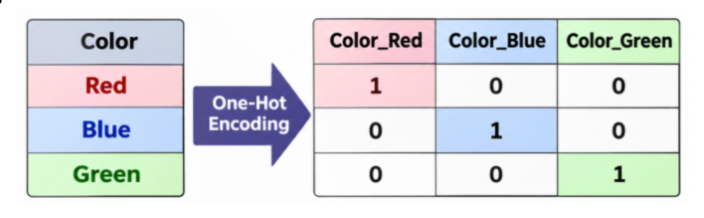
다시 그린 그림 · 누르면 원본그림 읽기: 왼쪽 표는 열 하나(Color)에 값 Red·Blue·Green이 있습니다. 보라색 화살표(One-Hot Encoding)를 지나면 값마다 열 하나(Color_Red, Color_Blue, Color_Green)가 생기고, 각 행은 자기 색의 열만 1, 나머지는 0입니다. Red → (1, 0, 0), Blue → (0, 1, 0), Green → (0, 0, 1).
신경망의 정답 t도 이렇게 씁니다. 0~9 숫자 손글씨(MNIST)에서 정답이 2이면 t = (0, 0, 1, 0, 0, 0, 0, 0, 0, 0), 원소 10개 중 3번째(인덱스 2)만 1입니다 (보충).
19쪽 코드의 one_hot_label=True가 정답을 이 모양으로 읽으라는 뜻입니다(→ 19). 1이 하나뿐이어서 교차 엔트로피에서 정답 항 하나만 남습니다(→ 02).
로그 함수 Log function — 왜 −log y가 손실이 되나
그림 읽기: 두 그래프 모두 곡선 y = logax이고, 둘 다 (1, 0)을 지납니다. 왼쪽(a > 1)은 오른쪽으로 갈수록 올라가고 x → 0이면 아래로 한없이 내려갑니다. 오른쪽(0 < a < 1)은 반대로 내려갑니다. 교차 엔트로피의 자연로그는 밑 e > 1이므로 왼쪽 그래프입니다.
| y | 1 | 0.9 | 0.7 | 0.5 | 0.1 | 0.01 | 0.001 |
|---|---|---|---|---|---|---|---|
| −log y | 0 | 0.105 | 0.357 | 0.693 | 2.303 | 4.605 | 6.908 |
(보충) Python 검산 값. y = 정답 클래스의 확률. y = 1(완전히 맞힘)이면 손실 0, y가 0에 가까울수록 손실이 한없이 커집니다.
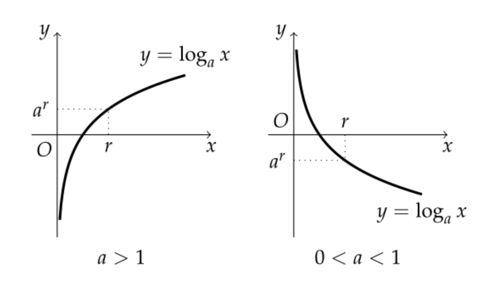
다시 그린 그림 · 누르면 원본교안 원본의 눈금 주의: 원본은 두 그래프 모두 가로축 점에 r, 세로축 점에 ar이라고 적었습니다. 하지만 y = logax 위의 점은 x = ar일 때 y = r, 즉 (ar, r)입니다. 두 라벨이 서로 바뀐 것으로 보입니다(→ 27).
미니배치 학습 Mini-batch Learning — 전체 손실의 평균
The total loss should be computed using all N training samples:
E = −1N ∑n ∑k tnk log ynk
- tnk: n번째 샘플의 k번째 출력에 대한 정답, ynk: 같은 자리의 예측, N: 훈련 샘플 수
- 안쪽 −∑k = 샘플 하나의 교차 엔트로피(→ 02). 바깥 ∑n으로 N개를 모두 더하고 N으로 나눔 → 샘플 하나당 평균 손실
- N으로 나누므로 데이터가 100개든 60,000개든 같은 기준으로 비교할 수 있습니다 (보충).
그런데 N이 매우 크면(빅데이터) 모든 샘플로 손실을 계산하는 비용이 큽니다. 그래서 미니배치 학습mini-batch learning을 씁니다: 훈련 데이터에서 일부를 무작위로 골라 그 평균 손실로 전체를 근사합니다(→ 18).
02의 두 샘플을 함께 넣으면(N = 2): 샘플 손실 0.357, 2.303 → E = 0.357 + 2.3032 ≈ 1.330.
P1 23은 샘플 100개를 행으로 쌓아 X(100×2)로 한 번에 계산했습니다. 미니배치도 같은 모양입니다. 19–20쪽 코드는 MNIST 60,000장에서 100장을 골라 x_batch(100×784)로 계산합니다(→ 19–20).
배치 학습 vs 미니배치 학습 Batch vs. Mini-batch Learning
| 배치 학습 Batch learning | 미니배치 학습 Mini-batch learning | |
|---|---|---|
| 데이터 | 훈련 데이터 전체(N개)를 배치 하나로 씀 | 데이터를 여러 개의 작은 배치로 나눔 (예: 배치마다 32–256개) |
| 갱신 | 전체 데이터로 손실을 계산해 1 에폭에 한 번 갱신 | 미니배치 하나로 근사 기울기를 계산해 그때마다 갱신 |
| 장점 | 기울기를 정확하게 추정 | 단일 샘플이나 전체 데이터를 쓸 때보다 더 빨리 수렴하고 갱신이 더 안정적 |
| 단점 | 메모리와 계산 시간이 많이 필요 | 기울기가 근사값 (보충 · 교안에는 단점 항목 없음) |
에폭epoch = 훈련 데이터 전체를 한 번 다 쓰는 단위. 반복iteration = 매개변수를 한 번 갱신하는 단위. 06–08은 "1 에폭이 몇 번의 반복인가"로 세 방법을 구분합니다.
"더 빨리"는 전체 배치(한 에폭에 한 번만 갱신)와, "더 안정적"은 샘플 하나(기울기가 샘플마다 크게 흔들림)와 비교한 말로 읽는 것이 자연스럽습니다 (보충).
- 배치 학습은 메모리를 적게 쓴다 → X (많이)
- 미니배치 학습은 정확한 기울기를 계산한다 → X (근사 기울기)
- 배치 학습은 1 에폭에 여러 번 갱신한다 → X (한 번)
배치 경사 하강법 Batch gradient descent — 1 에폭 = 반복 1번
In batch gradient descent, one epoch corresponds to a single iteration.
배치 경사 하강법에서는 1 에폭이 반복(iteration) 1번입니다.
그림 읽기 (출처 Baeldung): 왼쪽 빨간 상자 Training Data 안에 샘플 s1, s2, …, sn이 있습니다. 모든 샘플에서 나온 점선이 파란 상자 하나(Iteration 1)로 모입니다. 그 상자에서 위로 휜 점선이 회색 점선 상자 Compute Gradients(기울기 계산)로, 다시 Update Weights(가중치 갱신)로 이어집니다.
즉 n개를 모두 써서 기울기를 한 번 계산하고 가중치를 한 번 갱신하면 데이터를 한 바퀴 다 쓴 것(1 에폭)입니다.
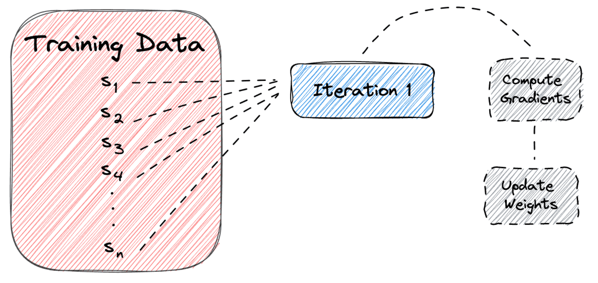
다시 그린 그림 · 누르면 원본확률적 경사 하강법 Stochastic gradient descent, SGD — 1 에폭 = 반복 n번
In stochastic gradient descent, one epoch corresponds to n iterations where n is the number of training samples.
SGD에서는 1 에폭이 반복 n번입니다. n = 훈련 샘플 수.
그림 읽기: 샘플이 하나씩 자기 파란 상자로 갑니다. s1 → Iteration 1, s2 → Iteration 2, …, sn → Iteration n. 모든 Iteration 상자에서 나온 점선이 Compute Gradients → Update Weights로 이어집니다. 반복마다 샘플 1개로 기울기를 계산하고 갱신한다는 뜻입니다.
"확률적(stochastic)"은 샘플을 무작위로 골라 쓰기 때문에 붙은 이름입니다 (보충). 갱신이 자주 일어나지만, 샘플 하나의 기울기는 전체 기울기와 다를 수 있어 경로가 흔들립니다 (보충).
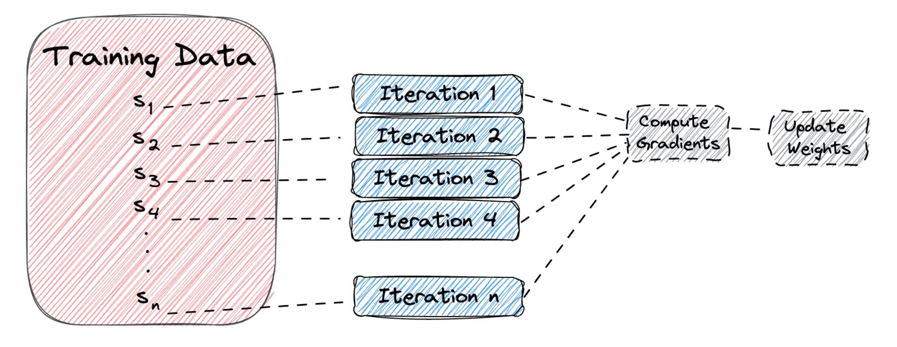
다시 그린 그림 · 누르면 원본미니배치 경사 하강법 Mini-batch gradient descent — 1 에폭 = 반복 nb번
In mini-batch gradient descent, one epoch corresponds to nb iterations where b is the size of the mini-batch.
미니배치 경사 하강법에서는 1 에폭이 반복 nb번입니다. b = 미니배치 크기.
그림 읽기: 샘플이 2개씩 묶여 파란 상자로 갑니다. (s1, s2) → Iteration 1, (s3, s4) → Iteration 2, …, (sn−1, sn) → 마지막 상자. 그림은 b = 2인 경우라 마지막 상자 번호가 n2입니다. 각 상자에서 나온 점선이 Compute Gradients → Update Weights로 이어집니다(가운데 생략된 점선도 있음).
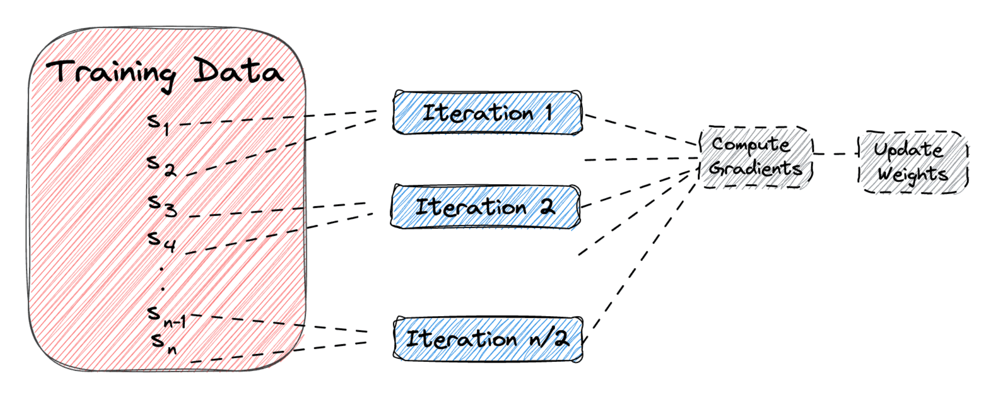
다시 그린 그림 · 누르면 원본세 방법을 한 표로 — 1 에폭에 갱신 몇 번?
| 방법 | 반복 1번에 쓰는 샘플 | 1 에폭의 반복 수 | n = 1000 (보충) | 특징 |
|---|---|---|---|---|
| 배치 경사 하강법 | n개 전부 | 1 | 1 | 기울기 정확, 메모리·시간 큼 |
| 확률적 경사 하강법 (SGD) | 1개 | n | 1000 | 갱신이 잦고 흔들림 |
| 미니배치 경사 하강법 | b개 | nb | b = 2 → 500 b = 100 → 10 | 둘의 중간. 신경망 학습에서 주로 씀 |
훈련 데이터 60,000장, 미니배치 100장 → 1 에폭 = 60000 ÷ 100 = 600번 반복(코드의 iter_per_epoch). 반복을 10,000번(iters_num) 하면 10000 ÷ 600 ≈ 16.7 에폭입니다. Python 검산.
- 배치 경사 하강법은 1 에폭에 n번 반복한다 → X (1번)
- SGD는 1 에폭에 1번 반복한다 → X (n번)
- 미니배치 크기 b를 키우면 1 에폭의 반복 수가 준다 → O
왜 손실 함수를 정의할까? Why We Define a Loss Function?
학습 과정은 두 가지입니다.
- 각 매개변수에 대해 손실 함수의 미분(기울기)을 계산한다. Calculating the derivative (gradient) of the loss function with respect to each parameter.
- 손실이 줄어드는 방향으로 매개변수 값을 갱신한다. Updating the parameter values in the direction that decreases the loss.
매개변수 하나만 본다면, 기울기는 그 매개변수를 조금 바꿀 때 손실이 어떻게 변하는지를 나타냅니다.
Therefore, a differentiable loss function is essential for gradient-based learning.
그래서 기울기 기반 학습에는 미분 가능한 손실 함수가 꼭 필요합니다.
| 기울기 ∂L∂w | 손실을 줄이려면 |
|---|---|
| 음수 | 매개변수를 키운다 If the gradient is negative, increasing the parameter reduces the loss. |
| 양수 | 매개변수를 줄인다 If the gradient is positive, decreasing the parameter reduces the loss. |
| 0 | 손실이 변하지 않음 → 갱신이 멈춤 the loss does not change — parameter updates stop. |
매개변수는 기울기 부호의 반대쪽으로 움직입니다. 15·18쪽 갱신식(18쪽: W ← W − η∂L∂W)의 −가 이것입니다(→ 15).
정확도는 왜 손실 함수로 못 쓸까
Metrics like accuracy cannot be used as loss functions because their gradients are zero almost everywhere, meaning the parameters cannot be updated.
정확도 같은 지표는 기울기가 거의 모든 곳에서 0이라 손실 함수로 쓸 수 없습니다. 기울기가 0이면 매개변수를 갱신할 수 없기 때문입니다.
시험 데이터 100장 중 32장을 맞히면 정확도 32%입니다. 가중치 하나를 아주 조금 바꿔도 맞힌 장 수는 대개 그대로 32장 → 정확도 변화 0 → 기울기 0.
바뀌더라도 32% → 33%처럼 띄엄띄엄(불연속으로) 뜁니다. 반면 교차 엔트로피는 출력 확률 y가 조금 변하면 −log y도 조금 변하므로(연속), 기울기가 0이 아닌 값으로 나옵니다.
정확도는 버리는 것이 아니라 학습이 잘 되었는지 보는 지표로 따로 씁니다. 20쪽 코드는 손실로 학습하고, 정확도는 에폭마다 기록·출력만 합니다(→ 20).
- 정확도는 미분할 수 있으므로 손실 함수로 쓸 수 있다 → X
- 기울기가 음수이면 매개변수를 줄여야 손실이 준다 → X (키워야)
- 기울기가 0이면 매개변수 갱신이 멈춘다 → O
- 기울기 기반 학습에는 미분 가능한 손실 함수가 필요하다 → O
계단 함수 vs 시그모이드 함수 Step Function vs. Sigmoid Function
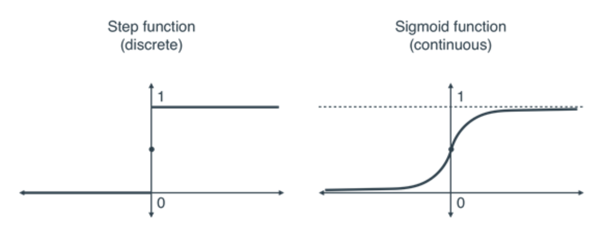
다시 그린 그림 · 누르면 원본왼쪽 Step function (discrete, 이산): x < 0에서 0, x > 0에서 1인 수평선이고, 세로축(x = 0)에서 한 번에 뜁니다. 세로축 가운데의 점은 x = 0에서 뛰는 자리(불연속점)를 표시한 것으로 보입니다(교안 설명 없음, 추측).
A step function has a gradient of zero almost everywhere, which prevents learning because parameter updates cannot occur.
계단 함수는 기울기가 거의 모든 곳에서 0이라 매개변수 갱신이 일어나지 않아 학습이 안 됩니다. x = 0에서는 미분할 수 없습니다 (보충).
오른쪽 Sigmoid function (continuous, 연속): 왼쪽에서 0에 가깝다가 원점 근처에서 매끄럽게 올라가 (0, 0.5)의 점을 지나고, 오른쪽에서 점선(높이 1)에 다가갑니다.
The sigmoid function has a non-zero and continuously varying gradient.
시그모이드는 기울기가 0이 아니고 연속적으로 변합니다. → 이 매끄러운 기울기 덕분에 신경망이 매개변수를 올바른 방향으로 조정하며 효과적으로 학습합니다.
시그모이드의 기울기는 어디서나 0보다 큽니다 (보충)
시그모이드 σ(x) = 11 + e−x의 미분은 σ′(x) = σ(x)(1 − σ(x))입니다(23쪽 코드의 sigmoid_grad, → 23). Python 검산 값:
| x | −3 | −1 | 0 | 1 | 3 |
|---|---|---|---|---|---|
| σ(x) | 0.047 | 0.269 | 0.5 | 0.731 | 0.953 |
| σ′(x) | 0.045 | 0.197 | 0.25 | 0.197 | 0.045 |
| 계단 함수의 기울기 | 0 | 0 | (미분 불가) | 0 | 0 |
시그모이드의 기울기는 x = 0에서 가장 크고(0.25), 0에서 멀어질수록 작아지지만 0이 되지는 않습니다.
계단 함수를 신경망의 활성화 함수로 쓰면, 가중치를 조금 바꿔도 출력이 0 또는 1 그대로라 손실도 그대로 → 기울기 0 → 갱신 없음. 정확도를 손실로 못 쓰는 이유(09)와 같습니다.
P1의 퍼셉트론은 계단 함수를 썼고, P1 15–16의 신경망은 시그모이드 같은 매끄러운 함수로 바꿨습니다. 그 이유가 여기입니다. 21쪽 TwoLayerNet도 은닉층에 시그모이드를 씁니다(→ 21).
계단 함수는 기울기가 연속적으로 변해 학습에 적합하다 → X. 시그모이드는 기울기가 거의 모든 곳에서 0이다 → X.
Part 1 정리 — 손실 함수와 미니배치
- 학습 = 훈련 데이터로부터 가중치·편향을 자동으로 찾는 것. 목표는 손실 최소화, 방법은 경사 하강법.
- 오차제곱합 E = ½∑(yk − tk)2, 교차 엔트로피 E = −∑tk log yk. 원-핫이라 정답 클래스의 −log y만 남음. 정답 확률이 클수록 손실이 작음.
- −log y: y = 1이면 0, y → 0이면 한없이 커짐. 음수 부호는 손실을 양수로 만들기 위해.
- 미니배치 손실 = −1N∑∑t log y = 샘플당 평균. 전체가 크면 일부를 무작위로 골라 근사.
- 1 에폭의 반복 수: 배치 1, SGD n, 미니배치 nb. 60000 ÷ 100 = 600.
- 기울기 음수 → 매개변수를 키움, 양수 → 줄임, 0 → 갱신 멈춤. 정확도·계단 함수는 기울기가 거의 모든 곳에서 0이라 학습에 못 씀.
미분과 경사 하강법
[복습] 수치 미분 Numerical Differentiation
| 해석적 미분analytical differentiation | 식(공식)으로 구한 정확한 결과. 예: x2의 미분 = 2x gives an exact, formula-based result |
| 수치 미분numerical differentiation | 입력을 작지만 유한한 크기만큼 바꿔 미분의 근삿값을 구함 provides an approximate value of the derivative by using small finite changes in the input |
df(x)dx = limh→0 f(x + h) − f(x)h
| 식의 부분 | 뜻 |
|---|---|
| f(x + h) − f(x) | 함수 값의 변화량 |
| f(x + h) − f(x)h | 평균 변화율 (두 점을 잇는 할선의 기울기) |
| limh→0 | h가 한없이 작아지면 할선이 접선에 가까워져 순간 변화율이 됨 |
df(x)dx는 점 x에서의 접선의 기울기이고, f(x)가 얼마나, 어느 방향으로 변하는지를 보여 줍니다. 부호가 방향, 크기가 정도입니다(미리 짚을 개념 ②).
숫자로 확인 — f(x) = 0.01x2 + 0.1x, x = 5 (보충) 이해용 계산
참고서(『밑바닥부터 시작하는 딥러닝 1』) 4장의 예시 함수입니다. 교안에는 없습니다.
해석적 미분: f′(x) = 0.02x + 0.1 → f′(5) = 0.1 + 0.1 = 0.2
수치 미분(교안 식에서 극한 대신 작은 h를 넣은 것, 전방 차분forward difference):
| h | f(5 + h) − f(5)h |
|---|---|
| 0.1 | 0.201 |
| 0.01 | 0.2001 |
| 10−4 | 0.2000010 |
Python 검산. h를 줄일수록 정답 0.2에 가까워집니다. 하지만 h가 0이 아니므로 정확히 0.2는 아닙니다(근삿값).
f′(5) = 0.2 > 0이므로 x = 5에서 x를 조금 키우면 f가 커집니다. x를 0.01 키우면 f는 약 0.2 × 0.01 = 0.002만큼 커집니다.
신경망에서는 x 자리에 가중치 w, f 자리에 손실 L이 들어갑니다. 교안 22쪽 numerical_gradient가 바로 이 수치 미분으로 기울기를 구합니다(→ 22). 23쪽 gradient는 해석적으로(오차역전파) 구합니다(→ 23).
진짜 접선과 근사 접선(할선)
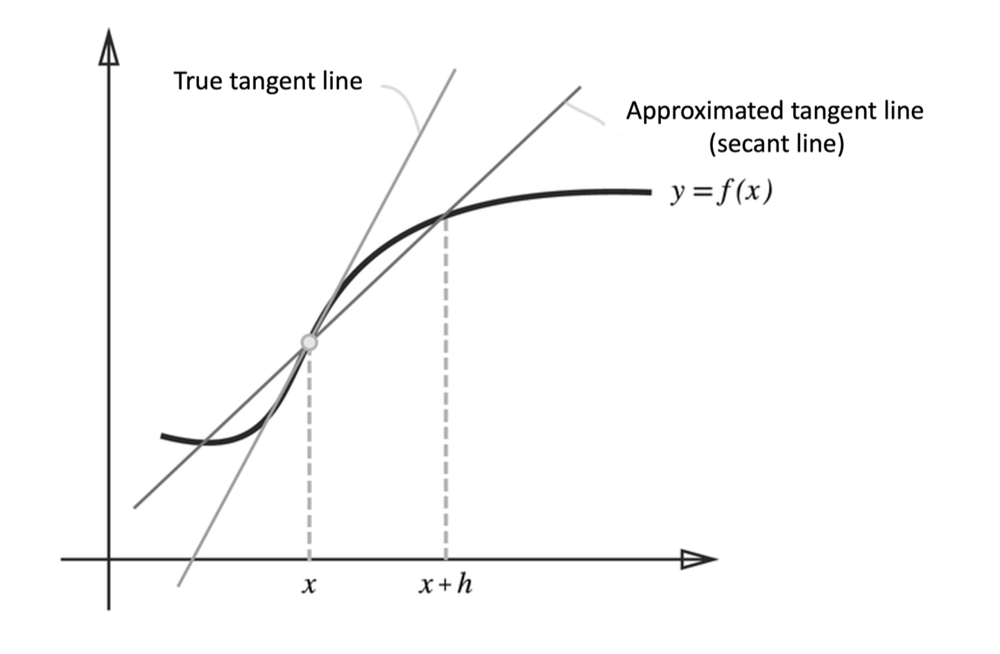
다시 그린 그림 · 누르면 원본그림 읽기: 굵은 곡선이 y = f(x)입니다. 가로축의 x와 x + h에서 올라간 점선이 곡선 위 두 점과 만납니다(x 쪽 점은 작은 원).
- True tangent line(진짜 접선): 점 x에서 곡선에 닿기만 하는 직선. 더 가파른 선입니다. 이 기울기가 미분 값입니다.
- Approximated tangent line (secant line)(근사 접선 = 할선): 점 x와 점 x + h를 잇는 직선. 덜 가파릅니다. 이 기울기가 f(x + h) − f(x)h입니다.
두 직선의 기울기가 다릅니다. 즉 h가 0이 아닌 한 수치 미분에는 오차가 있습니다. 교안은 이 오차를 줄이는 개선 두 가지를 듭니다(다음 장).
개선 두 가지 — 반올림 오차와 중앙 차분
개선 1: 반올림 오차rounding error
h: A value of approximately 10−4 is generally regarded as a good choice.
h는 10−4 정도가 일반적으로 좋은 값입니다. h를 너무 작게 하면 컴퓨터가 소수를 유한한 자릿수로만 저장하기 때문에 작은 값이 반올림되어 사라집니다 (보충).
| h (보충, Python) | 전방 차분 값 (정답 0.2) |
|---|---|
| 10−4 | 0.2000010 |
| 10−8 | 0.19999999434 |
| 10−12 | 0.20006 |
| 10−15 | 0.222 |
| 10−50 | 0.0 (5 + 10−50이 5로 저장됨) |
참고서 예: np.float32(1e-50)은 0.0이 됩니다. h = 0이면 0 ÷ 0이라 값을 구할 수 없습니다.
개선 2: 중앙 차분central difference
df(x)dx ≈ f(x + h) − f(x − h)2h
x를 가운데 두고 x − h와 x + h 두 점의 차이를 봅니다. 두 점 사이 거리가 2h라서 분모가 2h입니다. 전방 차분 (x, x + h)는 한쪽만 보므로 오차가 더 큽니다.
| h = 10−4, x = 5 | 값 (정답 0.2) |
|---|---|
| 전방 차분 | 0.2000010 |
| 중앙 차분 | 0.1999999999991 |
(보충) Python 검산. 전방 차분의 오차는 h에 비례하고 중앙 차분은 h2에 비례해 훨씬 작습니다. 이 f는 2차식이라 중앙 차분이 이론상 정확히 0.2이고, 남은 차이는 반올림 오차입니다.
[복습] 편미분 Partial Derivatives
- 다변수 함수에서는 출력이 변수 두 개 이상에 달려 있습니다.
- 편미분은 나머지 변수를 상수로 고정한 채 변수 하나에 대해 함수가 어떻게 변하는지를 잽니다. while keeping the others constant.
- 편미분은 한 번에 변수 하나의 영향만 따로 떼어 봅니다.
f(x0, x1) = x02 + x12 ⇒ ∂f∂x0 = 2x0, ∂f∂x1 = 2x1
- 최적화에서 편미분은 각 가중치 매개변수를 따로 갱신하는 데 쓰입니다.
- → 모든 변수에 대한 편미분을 모은 것을 기울기gradient라고 합니다. (∂f∂x0, ∂f∂x1)처럼 벡터로 씁니다. 기호 ∇f로도 씁니다 (보충).
∂f∂x0: x1 = 4로 고정하면 f = x02 + 16. 16은 상수라 미분하면 0 → 2x0 = 2 × 3 = 6
∂f∂x1: x0 = 3으로 고정하면 f = 9 + x12 → 2x1 = 2 × 4 = 8
기울기 = (6, 8). 중앙 차분으로 구한 값도 (6, 8)입니다(Python). 다른 점: (0, 2) → (0, 4), (3, 0) → (6, 0).
기호 ∂(라운드 디)는 "다른 변수는 고정"을 나타냅니다. 변수가 하나일 때 쓰는 d와 구별합니다 (보충).
f(x0, x1) = x02 + x12를 그림으로 — 곡면과 화살표
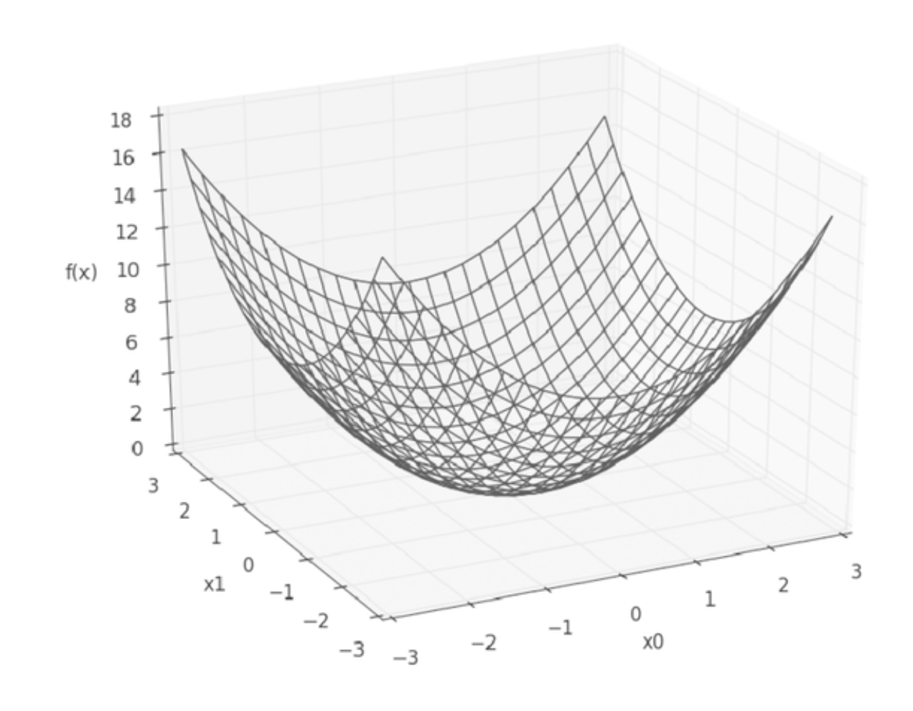
다시 그린 그림 · 누르면 원본왼쪽 곡면: 바닥 두 축이 x0, x1(각각 −3~3), 세로축이 f(x)(0~18)입니다. 그릇 모양이고 원점 (0, 0)에서 가장 낮은 값 0, 모서리 (±3, ±3)에서 가장 높은 값 18입니다.
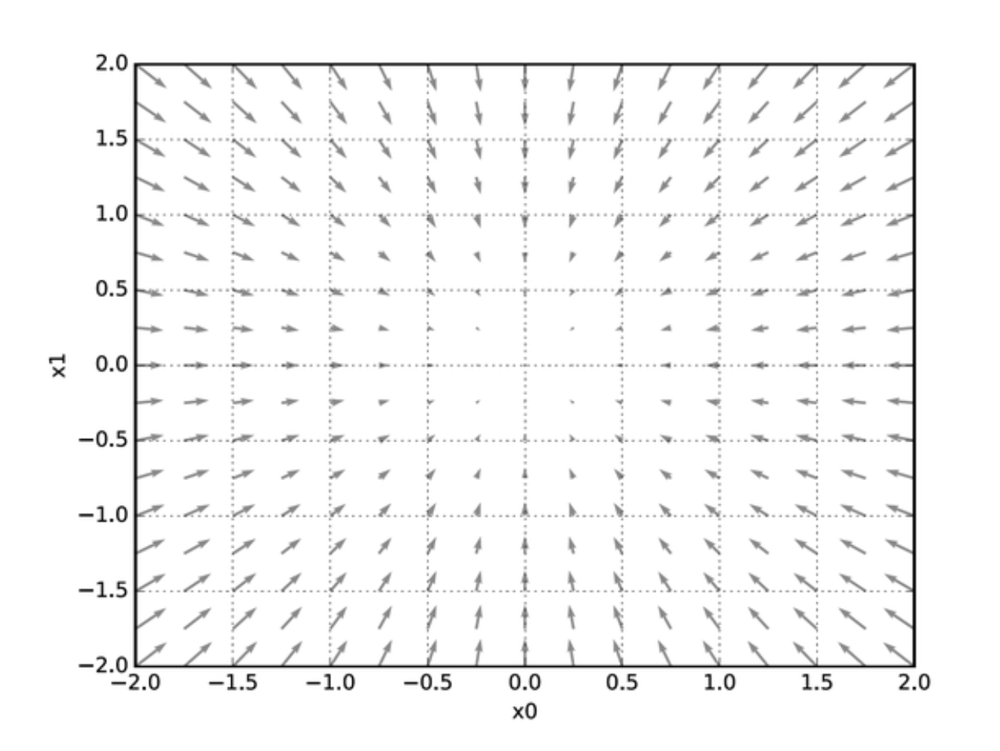
다시 그린 그림 · 누르면 원본오른쪽 화살표 그림: 위에서 내려다본 평면(x0, x1 각각 −2~2)의 격자점마다 회색 화살표가 있습니다. 화살표는 모두 원점(가장 낮은 곳)을 향하고, 원점에서 멀수록 길고 원점 근처에서는 거의 점처럼 짧습니다.
화살표 = 기울기에 −를 붙인 것 = 가장 빨리 내려가는 방향
기울기 (2x0, 2x1)는 함수 값이 가장 크게 늘어나는 방향입니다. 그림의 화살표는 그 반대, −(2x0, 2x1)을 그린 것입니다. 참고서는 "기울기 결과에 마이너스를 붙인 벡터"를 그렸다고 설명합니다 (보충, 교안에는 이 설명 없음 → 27).
| 점 | 기울기 | 화살표(−기울기) | 가리키는 쪽 |
|---|---|---|---|
| (1.5, −1) | (3, −2) | (−3, 2) | 왼쪽 위 = 원점 쪽 |
| (2, 2) | (4, 4) | (−4, −4) | 왼쪽 아래 = 원점 쪽 |
| (0, 0) | (0, 0) | (0, 0) | 길이 0 (최솟값) |
(보충) Python 검산. 원점에서 멀수록 기울기의 크기가 커서 화살표가 깁니다.
기울기에 −를 붙인 방향 = 각 점에서 함수 값을 가장 크게 줄이는 방향. 이 방향으로 조금씩 옮겨 가면 최솟값(그릇의 바닥)에 도착합니다. 이것이 경사 하강법입니다(→ 15).
이 함수는 바닥이 하나뿐이라 화살표가 모두 한 점을 향합니다. 실제 신경망의 손실 함수는 모양이 복잡해서 −기울기가 항상 가장 낮은 곳을 정확히 가리키지는 않습니다 (보충).
기울기는 함수 값이 가장 크게 줄어드는 방향이다 → X (가장 크게 늘어나는 방향. 줄어드는 방향은 −기울기)
경사 하강법 Gradient Descent Method
기울기를 따라가서 손실의 최솟값을 찾는 방법을 경사 하강법gradient descent이라고 합니다.
- 현재 위치에서 손실 함수의 기울기를 계산한다.
- 기울기의 반대 방향(가장 가파르게 줄어드는 방향)으로 작게 한 걸음 옮긴다.
- 수렴할 때까지 반복한다.
매개변수 x0, x1에 대한 식(교안 그대로):
x0 = x0 − η ∂f∂x0, x1 = x1 − η ∂f∂x1
여기서 =는 "같다"가 아니라 "오른쪽 값을 계산해 왼쪽에 넣는다"(대입, ←)입니다. 18쪽은 같은 식을 W ← W − η∂L∂W로 씁니다(→ 18, 27).
| 기호 | 뜻 |
|---|---|
| η (에타) | 학습률learning rate: 한 번 갱신할 때 움직이는 크기를 정하는 상수 |
| − η × 기울기 | 기울기가 양수면 줄이고, 음수면 키움(09의 표와 같음) |
| η | 결과 |
|---|---|
| 너무 크면 | 최솟값을 지나쳐 버릴 수 있음 Too large η → may overshoot the minimum. |
| 너무 작으면 | 수렴이 매우 느려짐 Too small η → convergence becomes very slow. |
학습률처럼 학습으로 정해지지 않고 사람이 미리 정하는 값을 하이퍼파라미터hyperparameter라고 합니다 (보충, → 19).
직접 따라가 보기 — 시작 (−3, 4), η = 0.1 (보충) 이해용 계산
f = x02 + x12, 기울기 = (2x0, 2x1). 한 번 갱신하면
x ← x − 0.1 × 2x = 0.8x 각 좌표가 매번 0.8배가 됩니다
| 갱신 횟수 | (x0, x1) | f |
|---|---|---|
| 0 (시작) | (−3, 4) | 25 |
| 1 | (−2.4, 3.2) | 16 |
| 2 | (−1.92, 2.56) | 10.24 |
| 3 | (−1.536, 2.048) | 6.5536 |
| 10 | (−0.322, 0.429) | 0.288 |
| 100 | (−6.1 × 10−10, 8.1 × 10−10) | ≈ 0 |
Python 검산. 100번 뒤 거의 (0, 0), 최솟값에 도착합니다.
x0 = −3에서 ∂f∂x0 = −6 (음수) → x0 − 0.1 × (−6) = −3 + 0.6 = −2.4. 기울기가 음수라서 x0가 커졌습니다.
x1 = 4에서 ∂f∂x1 = 8 (양수) → 4 − 0.8 = 3.2. 기울기가 양수라서 x1이 작아졌습니다. 둘 다 원점 쪽(14의 화살표 방향)입니다.
원점에 가까워질수록 기울기가 작아지므로 한 걸음도 작아집니다(−3 → −2.4는 0.6, −1.92 → −1.536은 0.384). 그래서 처음엔 크게, 나중엔 촘촘히 움직입니다. 16쪽 가운데 그림과 같은 모습입니다(→ 16).
학습률의 크기에 따라 — 작음 · 적절함 · 큼
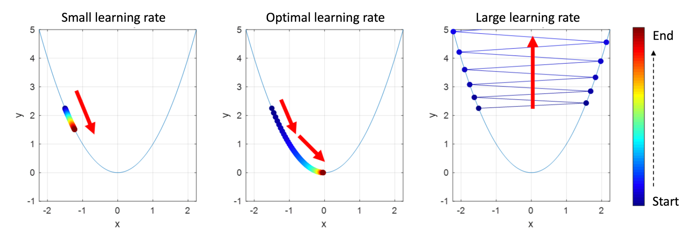
다시 그린 그림 · 누르면 원본공통: 세 그래프 모두 같은 포물선 y = x2(하늘색), 가로축 x(−2~2), 세로축 y(−1~5)입니다. 점 하나가 갱신 한 번 뒤의 위치이고, 점의 색은 오른쪽 색 막대처럼 남색(Start) → 빨강(End) 순서입니다. 세 그래프 모두 x ≈ −1.5, y ≈ 2.25에서 시작합니다.
Small (작음): 점들이 왼쪽 비탈을 따라 x ≈ −1.22, y ≈ 1.5까지만 조금 내려가고 끝납니다. 빨간 화살표 = 내려가는 방향. 정해진 횟수 안에 바닥에 못 감.
Optimal (적절): 비탈을 따라 내려가 원점(0, 0) 근처에서 끝납니다. 처음엔 점 간격이 넓고 바닥에 가까울수록 촘촘합니다. 최솟값에 수렴.
Large (큼): 점이 바닥을 지나쳐 왼쪽·오른쪽 비탈을 번갈아 오가며(파란 지그재그 선) 점점 위로 올라갑니다. 위를 향한 빨간 화살표 = 손실이 커짐. 발산.
그림과 같은 거동을 숫자로 (보충) 예시 값 · Python 검산
교안 그림에는 η 값이 적혀 있지 않습니다. 아래 η는 그림과 같은 거동을 보이도록 고른 예시 값입니다. y = x2, 기울기 2x, 시작 x = −1.5.
x ← x − η × 2x = (1 − 2η) x
| η | 1 − 2η | x의 변화 | 10회 뒤 |
|---|---|---|---|
| 0.01 | 0.98 | −1.5 → −1.47 → −1.441 → … | x = −1.226 y = 1.50 |
| 0.1 | 0.8 | −1.5 → −1.2 → −0.96 → −0.768 → … | x = −0.161 y = 0.026 |
| 1.02 | −1.04 | −1.5 → 1.56 → −1.622 → 1.687 → … | x = −2.22 y = 4.93 |
η = 0.01의 끝점은 왼쪽 그림 끝(−1.22, 1.5)과, η = 1.02의 점들은 오른쪽 그림의 점 위치와 거의 같습니다.
매번 x에 (1 − 2η)를 곱합니다. 이 수의 크기가 1보다 작으면 x가 0으로 줄어 수렴하고, 1보다 크면 점점 커져 발산합니다. η > 0.5이면 1 − 2η가 음수라 부호가 번갈아 바뀌며 좌우로 튑니다. 그중 0.5 < η < 1이면 튀면서도 수렴하고, η > 1이면 크기가 1보다 커져 튀면서 점점 멀어집니다(발산, 오른쪽 그림의 지그재그).
- 학습률이 클수록 항상 빨리 수렴한다 → X (너무 크면 발산)
- 학습률이 너무 작으면 최솟값을 지나친다 → X (너무 크면)
- 학습률은 학습 중에 데이터로부터 자동으로 정해진다 → X (사람이 정하는 하이퍼파라미터)
신경망에서의 기울기 Gradients in Neural Networks
신경망 학습에서는 각 매개변수(가중치)에 대한 손실 함수의 기울기를 구해야 합니다. → 이 기울기는 각 가중치가 전체 손실에 얼마나 기여하는지와 어느 방향으로 갱신해야 하는지를 알려 줍니다.
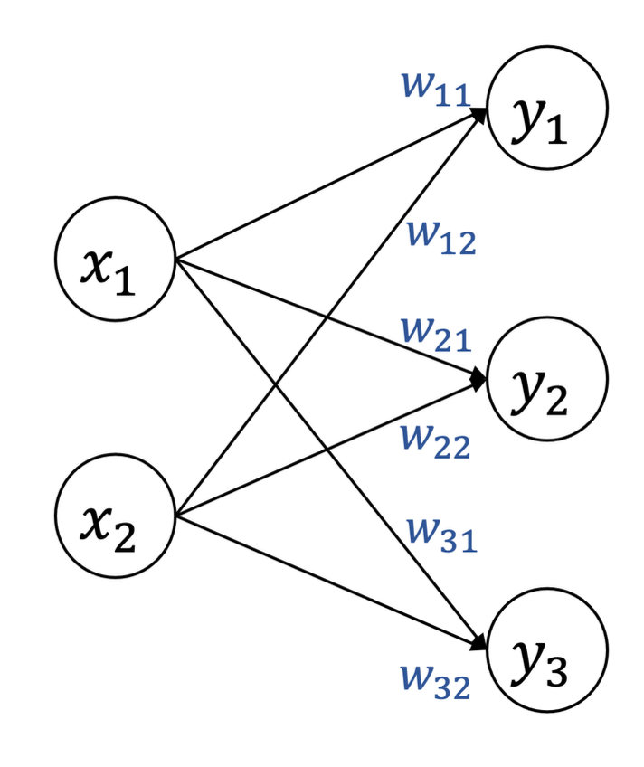
다시 그린 그림 · 누르면 원본그림 읽기: 입력 노드 2개(x1, x2), 출력 노드 3개(y1, y2, y3). 모든 입력이 모든 출력과 화살표로 이어져 가중치가 6개입니다. wij는 P1과 같이 i = 도착(출력 노드), j = 출발(입력 노드): x1 → y1은 w11, x2 → y1은 w12, x1 → y3은 w31.
| w11 | w21 | w31 |
| w12 | w22 | w32 |
- 1행 = x1에서 나가는 가중치(w11, w21, w31), 2행 = x2에서 나가는 가중치. j열 = yj로 들어오는 가중치.
- 모양 = (이전 층 2) × (다음 층 3). 행벡터 x(1×2)에 곱하면 (1×2)(2×3) = 1×3, 출력 3개 (P1 18의 a = xW + b와 같음).
- 주의: w12는 2행 1열에 있습니다. 첨자 순서(도착, 출발)와 칸 위치(행 = 출발, 열 = 도착)가 반대, 즉 전치된 자리입니다(→ 27).
기울기 행렬 — W와 모양이 같습니다
| ∂L∂w11 | ∂L∂w21 | ∂L∂w31 |
| ∂L∂w12 | ∂L∂w22 | ∂L∂w32 |
교안 그림은 이 행렬의 첨자가 겹쳐 깨져 있어 HTML로 다시 썼습니다(→ 27).
- 원소 하나 = 그 가중치 하나만 조금 바꿀 때 손실 L이 변하는 정도(편미분, → 13). 다른 가중치는 고정합니다.
- W의 같은 자리 원소끼리 짝: 1행 2열은 W에서 w21, ∂L∂W에서 ∂L∂w21. 그래서 ∂L∂W의 모양 = W의 모양 (2×3).
∂L∂w11 = 0.2라면: w11을 h만큼 키우면 L이 약 0.2h 커집니다 → 손실을 줄이려면 w11을 줄여야 합니다.
∂L∂w32 = −0.5라면: w32를 키워야 손실이 줄고, 절댓값이 커서 0.2인 w11보다 손실에 주는 영향이 큽니다.
이 행렬을 통째로 갱신식에 넣는 것이 18쪽의 W ← W − η∂L∂W입니다. 모양이 같으므로 같은 자리끼리 빼면 됩니다(→ 18).
21–23쪽 TwoLayerNet에서도 W1(784×50)의 기울기 grads['W1']은 784×50, W2(50×10)의 기울기는 50×10입니다(→ 21–23).
Part 2 정리 — 미분과 경사 하강법
- 해석적 미분 = 식으로 구한 정확한 값, 수치 미분 = 작은 h로 구한 근삿값. 미분 = 접선의 기울기 = 얼마나·어느 방향으로 변하는지.
- 할선(x, x + h)과 접선은 기울기가 다름 → 오차. 개선: h ≈ 10−4(너무 작으면 반올림 오차), 중앙 차분 f(x + h) − f(x − h)2h.
- 편미분 = 나머지 변수를 고정하고 하나만 미분. 모든 편미분을 모은 벡터 = 기울기. x02 + x12의 (3, 4)에서 (6, 8).
- 기울기는 가장 크게 늘어나는 방향, −기울기는 가장 크게 줄어드는 방향(화살표가 원점을 향함).
- 경사 하강법: x ← x − η × 기울기, 수렴할 때까지 반복. η 크면 지나침·발산, 작으면 매우 느림.
- ∂L∂W는 W와 모양이 같음. 원소 = 그 가중치 하나에 대한 편미분. W의 행 = 출발 노드, 열 = 도착 노드.
학습 알고리즘 구현
신경망 학습의 4단계 Implementing the Learning Algorithm
Neural network training typically consists of the following steps: 1. Mini-batch selection 2. Gradient computation 3. Parameter update 4. Iteration
W ← W − η ∂L∂Wη: 학습률(learning rate) · ∂L∂W: W와 모양이 같은 기울기 행렬(→ 17)
"←"는 오른쪽을 계산해 왼쪽에 넣는다(대입)는 뜻입니다. 15쪽 경사 하강법 식은 같은 일을 "="로 썼습니다(→ 15). 이 장의 W는 W1, b1, W2, b2 모든 매개변수를 대표합니다. 편향도 같은 식으로 갱신합니다.
4단계를 읽을 때 틀리기 쉬운 곳
| 맞는 문장 | 방향을 바꿔 틀린 문장 |
|---|---|
| 기울기는 손실이 가장 빠르게 증가하는 방향이다. | 기울기는 손실이 가장 빠르게 감소하는 방향이다. |
| 매개변수는 기울기의 반대 방향으로 갱신한다(−η). | 매개변수는 기울기 방향으로 갱신한다(+η). |
| ∂L∂w가 음수이면 w를 키워야 손실이 준다. | ∂L∂w가 음수이면 w를 줄여야 손실이 준다. |
| 미니배치는 훈련 데이터에서 무작위로 고른다. | 미니배치는 훈련 데이터의 앞에서부터 차례로 고른다. |
| 목표는 미니배치 손실을 최소화하는 것이다. | 목표는 미니배치의 정확도의 기울기를 구하는 것이다(→ 09). |
마지막 줄: 정확도는 거의 모든 곳에서 기울기가 0이라 학습에 쓰지 못합니다(9쪽). 학습에는 손실을 씁니다.
| 1 미니배치 선택 | 29–31행 |
| 2 기울기 계산 | 35행 |
| 3 매개변수 갱신 | 38–39행 |
| 4 반복 | 27행 for |
(보충) 교안 그림 출처인 『밑바닥부터 시작하는 딥러닝 1』은 미니배치를 무작위로 고르기 때문에 이 방법을 확률적 경사 하강법(SGD)이라고도 부릅니다. 교안 7쪽은 SGD를 "샘플 1개마다 1번 갱신"으로 정의했으므로, 시험에서는 교안 7쪽 정의를 따르는 것이 안전합니다(→ 07, 27).
학습 스크립트 1–12행 — 준비, 데이터 읽기, 신경망 만들기
| 2–7 | 필요한 모듈을 가져옵니다. 3행은 한 단계 위 폴더(os.pardir)도 찾게 해서 6·7행의 dataset, two_layer_net 파일을 읽을 수 있게 합니다. 7행의 TwoLayerNet이 21–23쪽의 클래스입니다(→ 21). |
| 10 | MNIST(손글씨 숫자 0–9, 28 × 28 = 784픽셀)를 훈련용·시험용으로 나눠 읽습니다. normalize=True: 픽셀 값 0–255를 0.0–1.0으로 바꿈. one_hot_label=True: 정답 t를 원-핫 벡터로 받음(→ 03). (보충) x_train 60000 × 784, t_train 60000 × 10, x_test 10000 × 784, t_test 10000 × 10 |
| 12 | 입력 784 → 은닉 50 → 출력 10인 2층 신경망을 만듭니다. 출력 10개 = 숫자 0–9 각각의 확률(소프트맥스, P1). |
학습 스크립트 14–25행 — 하이퍼파라미터 hyperparameter
하이퍼파라미터 = 사람이 미리 정하는 값(반복 횟수, 미니배치 크기, 학습률). 매개변수(W, b) = 학습이 데이터로 정하는 값. 둘을 바꿔 말하면 틀립니다.
| 행 | 값 | 뜻 |
|---|---|---|
| 15 | iters_num = 10000 | 매개변수 갱신을 모두 10000번 합니다(27행 for). |
| 16 | train_size = 60000 | x_train.shape[0] = 행 수 = 훈련 샘플 수 (보충) |
| 17 | batch_size = 100 | 미니배치 하나에 샘플 100개 (교안 5쪽 예 32–256 사이) |
| 18 | learning_rate = 0.1 | 갱신식의 η (→ 15, 16) |
| 20–22 | 빈 리스트 3개 | 손실, 훈련 정확도, 시험 정확도를 기록할 곳 |
| 25 | iter_per_epoch = 600.0 | max(60000 ÷ 100, 1) = 600. 1에폭 = 600번 반복. 8쪽의 n ÷ b입니다(→ 08). |
10000번 반복 ÷ 600 ≈ 16.7에폭. 훈련 데이터 전체를 약 16.7번 본 만큼 학습합니다. max(…, 1)은 데이터가 배치 크기보다 적어도 1 이상이 되게 하는 안전장치입니다 (보충).
학습 루프 27–39행 — 4단계가 그대로 코드로
| 27 | ④ 반복: i = 0, 1, …, 9999로 10000번 돕니다. |
| 29 | ① 미니배치 선택: 0–59999 중 번호 100개를 무작위로 뽑습니다(batch_mask). |
| 30–31 | 그 번호의 행만 꺼냅니다. x_batch 100 × 784, t_batch 100 × 10 (보충) |
| 34 | 맨 앞 #으로 주석 처리되어 실행되지 않음. 수치 미분 방식(→ 22) |
| 35 | ② 기울기 계산: 오차역전파 방식 gradient(→ 23). grad는 'W1', 'b1', 'W2', 'b2' 네 기울기를 담은 딕셔너리 |
| 38–39 | ③ 매개변수 갱신: 네 매개변수마다 W ← W − η ∂L∂W. "-="는 빼서 다시 넣기 |
학습 루프 41–51행 — 학습 경과 기록
| 42–43 | 갱신한 뒤 같은 미니배치의 손실을 계산해 매번 기록합니다. 10000번 → 손실 10000개 |
| 46 | i를 600으로 나눈 나머지가 0일 때만, 즉 1에폭마다 실행합니다. i = 0, 600, …, 9600 → 17번 (Python 확인) |
| 47–51 | 훈련 데이터 전체(60000)와 시험 데이터 전체(10000)의 정확도를 계산해 기록·출력합니다. |
훈련 정확도만 높고 시험 정확도가 낮으면 훈련 데이터에만 맞춘 과적합overfitting입니다(중간 범위). 두 값을 함께 기록해 이것을 확인합니다 (보충).
손실은 학습(기울기 계산)에 쓰고, 정확도는 확인용 기록으로만 씁니다(→ 09).
루프 한 바퀴에서 값의 모양 (보충) Python 확인
| 값 | 모양 | 설명 |
|---|---|---|
| batch_mask | (100,) | 0–59999 사이 정수 100개 |
| x_batch | 100 × 784 | 이미지 100장, 한 행 = 한 장 |
| t_batch | 100 × 10 | 원-핫 정답 100개 |
| grad['W1'] · ['b1'] | 784 × 50 · (50,) | params와 모양이 같음 → 39행에서 원소끼리 뺄 수 있음 |
| grad['W2'] · ['b2'] | 50 × 10 · (10,) | |
| loss | 숫자 1개 | 미니배치 100개의 평균 교차 엔트로피(→ 04) |
| train_acc · test_acc | 숫자 1개 | 0–1 사이 비율 |
- 19쪽 코드는 25행, 20쪽은 27행부터라 26행이 없습니다. 빈 줄로 추정합니다(→ 27).
- np.random.choice(60000, 100)은 기본이 복원 추출이라 한 미니배치 안에 같은 샘플이 두 번 들어갈 수 있습니다. 100개 중 겹침이 생길 확률 ≈ 7.9% (보충, Python 계산)
- 46행이 39행 뒤에 있으므로 i = 0에서 기록되는 정확도도 이미 1번 갱신한 뒤의 값입니다 (보충).
TwoLayerNet 1–16행 — 매개변수 만들기 __init__
| 4–5 | 4행은 sigmoid, softmax, cross_entropy_error, sigmoid_grad 같은 함수를, 5행은 수치 미분 함수 numerical_gradient를 가져옵니다(22쪽 48–51행에서 씀). (보충) 두 파일의 내용은 교안에 없습니다. |
| 12 | params = 매개변수 네 개를 이름('W1' 등)으로 꺼내 쓰는 딕셔너리 |
| 13, 15 | 가중치 = 0.01 × 표준정규분포 난수. W1: 784 × 50, W2: 50 × 10 — P1과 같이 (앞 층 노드 수) × (다음 층 노드 수) |
| 14, 16 | 편향은 0으로 시작. b1: 50개, b2: 10개 = 다음 층 노드 수. 매개변수 합계 784×50 + 50 + 50×10 + 10 = 39,760개 |
TwoLayerNet 18–33행 — 순전파 predict와 손실 loss
| 19–20 | 딕셔너리에서 매개변수 네 개를 꺼냅니다. |
| 22 | a1 = xW1 + b1 — P1의 a = xW + b와 같은 식 |
| 23 | 은닉층 활성화 함수: 시그모이드(원소마다) |
| 24 | a2 = z1W2 + b2 — 다음 층에는 a1이 아니라 z1을 넘김 |
| 25 | 출력층: 소프트맥스 → 10개의 확률(합 1) |
| 30–33 | predict로 y를 구한 뒤 정답 t와의 교차 엔트로피 오차를 손실로 돌려줍니다(→ 02, 04). |
29행 주석: x = 입력 데이터, t = 정답 레이블. loss는 학습 루프의 42행에서 부릅니다.
미니배치 100개가 지나가는 모양 (보충) Python 확인
| 행 | 계산 | 모양 | 설명 |
|---|---|---|---|
| 입력 | x | 100 × 784 | 한 행 = 이미지 한 장 |
| 22 | a1 = np.dot(x, W1) + b1 | (100×784)(784×50) → 100 × 50 | b1(50개)은 100행 모두에 더해짐 |
| 23 | z1 = sigmoid(a1) | 100 × 50 | 원소마다 적용 → 모양 그대로 |
| 24 | a2 = np.dot(z1, W2) + b2 | (100×50)(50×10) → 100 × 10 | |
| 25 | y = softmax(a2) | 100 × 10 | 행마다 합 1 |
| 33 | cross_entropy_error(y, t) | 숫자 1개 | 100개 샘플 손실의 평균 |
처음 손실 ≈ 2.30 (보충): 가중치가 0.01배로 작아서 처음에는 출력 10개가 거의 0.1로 고르게 나옵니다. 그러면 손실 ≈ −log 0.1 = 2.303입니다(→ 03). 무작위 데이터로 이 코드를 실행했을 때 처음 손실은 2.2996이었습니다. 학습이 되면 이 값이 줄어야 합니다.
TwoLayerNet 35–41행 — 정확도 accuracy
| 36 | 확률 y (100 × 10)를 구합니다. |
| 37 | 행마다 가장 큰 값의 위치(argmax, axis=1) → 예측한 숫자 100개 |
| 38 | 원-핫 t에서도 1의 위치 → 정답 숫자 100개 |
| 40 | 같은 것의 개수 ÷ 샘플 수 = 맞힌 비율 |
| y (예측 확률) | argmax | t (원-핫) | argmax | 같음? |
|---|---|---|---|---|
| (0.1, 0.8, 0.1) | 1 | (0, 1, 0) | 1 | True |
| (0.3, 0.1, 0.6) | 2 | (1, 0, 0) | 0 | False |
| (0.2, 0.5, 0.3) | 1 | (0, 1, 0) | 1 | True |
np.sum → True 2개 → 2 ÷ 3 = 0.667. 둘째 행을 (0.32, 0.1, 0.58)로 조금 바꿔도 argmax가 그대로라 정확도는 변하지 않습니다. 그래서 정확도는 기울기가 거의 0이고 손실로 쓸 수 없습니다(→ 09).
위치 번호는 0부터 셉니다. argmax는 확률 값이 아니라 위치(인덱스)를 돌려줍니다.
TwoLayerNet 43–53행 — 수치 미분으로 기울기 구하기
| 45 | loss_W = "현재 매개변수로 손실을 계산하는 함수". lambda는 이름 없는 짧은 함수입니다. |
| 48–51 | W1, b1, W2, b2 각각에 대해 수치 미분 함수(5행에서 가져온 것)로 기울기를 구해 grads에 담습니다. 이 메서드 자신을 다시 부르는 것이 아닙니다. |
| 53 | grads = 매개변수와 이름·모양이 같은 기울기 딕셔너리 |
책의 numerical_gradient는 원소 하나씩 h = 10−4만큼 올리고 내려 중앙 차분으로 계산합니다(→ 12). 원소마다 손실을 2번 계산하므로 매개변수 39,760개면 79,520번의 순전파가 필요합니다. 그래서 학습에는 훨씬 빠른 오차역전파(gradient, → 23)를 씁니다. 결과는 모양이 같고 값은 거의 같습니다(수치 미분은 근삿값).
TwoLayerNet 55–66행 — gradient의 앞부분: forward
gradient는 오차역전파backpropagation로 기울기를 구합니다. 이 교안에는 코드만 있고 원리 설명은 없습니다. 다음 교안에서 다룰 가능성이 높습니다 (추측). 이 장에서는 흐름과 모양만 정확히 봅니다.
| 56–58 | 매개변수를 꺼내고 결과를 담을 grads를 만듭니다. |
| 60 | batch_num = x의 행 수 = 100 |
| 63–66 | forward: predict(22–25행)와 똑같은 순전파로 y를 구합니다. 중간값 a1, z1을 변수로 남겨 뒤의 backward에서 다시 씁니다. |
흐름: forward로 y를 구한 뒤 backward로 grads를 구한다.
TwoLayerNet 68–78행 — backward: 각 기울기의 모양
| 행 | 모양 계산 (Python 확인) | 뜻 (보충) |
|---|---|---|
| 69 | dy: 100 × 10 | ∂L∂a2 = (y − t) ÷ 100 |
| 70 | z1.T (50×100) · dy (100×10) → 50 × 10 | = W2의 모양 |
| 71 | dy를 세로로(axis=0) 합 → (10,) | = b2의 모양 |
| 73 | dy (100×10) · W2.T (10×50) → 100 × 50 | ∂L∂z1 |
| 74 | sigmoid_grad(a1) * da1 → 100 × 50 | 원소끼리 곱 · ∂L∂a1 |
| 75 | x.T (784×100) · dz1 (100×50) → 784 × 50 | = W1의 모양 |
| 76 | dz1을 세로로 합 → (50,) | = b1의 모양 |
backward는 출력층(W2, b2)부터 입력층(W1, b1) 쪽으로 거꾸로 계산합니다. 그래서 "역"전파입니다 (보충). 기울기 4개의 모양은 매개변수 4개의 모양과 같습니다.
numerical_gradient와 gradient 비교
| numerical_gradient (22쪽) | gradient (23쪽) | |
|---|---|---|
| 방법 | 수치 미분(중앙 차분) | 오차역전파(해석적으로 구한 식) |
| 학습 루프 | 34행, 주석 처리 | 35행, 실제로 사용 |
| 속도 | 느림 — 매개변수마다 손실 2번 | 빠름 — forward 1번 + backward 1번 |
| 결과 | 모양은 같고 값은 거의 같은 grads(차이 10−8 수준, 수치 미분은 근삿값) | |
(보충) Python 확인: 작은 신경망(입력 6 · 은닉 4 · 출력 3, 샘플 5개)에서 두 결과의 차이는 가장 커도 4 × 10−8였습니다. 784-50-10에 무작위 데이터 100개를 넣어 grads 4개의 모양이 params와 같음을 확인했습니다.
소프트맥스와 교차 엔트로피를 이어 붙이면 a2에 대한 기울기가 예측 − 정답(y − t)이라는 간단한 꼴이 됩니다. 손실이 배치 평균이므로(→ 04) 100으로 나눕니다. 정답 칸에서는 y − 1 < 0, 나머지 칸에서는 y − 0 > 0입니다.
변수 이름 주의: 코드의 da1은 실제로 ∂L∂z1, dz1은 ∂L∂a1에 해당합니다. 이 자료는 교안 이름을 그대로 둡니다(→ 27).
작은 예로 1번 학습 ① 순전파 → 손실 → 기울기 (보충) Python 검산
은닉층 없이 입력 2개 → 출력 2개, 출력층 소프트맥스, 손실 교차 엔트로피(log는 자연로그)인 가장 작은 신경망입니다. 샘플 1개라 batch_num = 1입니다.
W =
| 0.2 | 0.1 |
| 0.3 | 0.4 |
η = 0.5
정답은 2번째 칸입니다. 값은 넷째 자리 반올림.
| 단계 | 계산 | 값 | ||||
|---|---|---|---|---|---|---|
| 가중합 | a = xW + b | (0.35, 0.30) | ||||
| 출력 | y = softmax(a) | (0.5125, 0.4875) | ||||
| 예측 | argmax y | 1번째 칸 → 틀림 | ||||
| 손실 | L = −log y2 = −log 0.4875 | 0.7185 | ||||
| ∂L∂a | y − t | (0.5125, −0.5125) | ||||
| ∂L∂W | xT(y − t), 2 × 2 = W의 모양 |
| ||||
| ∂L∂b | y − t | (0.5125, −0.5125) |
작은 예로 1번 학습 ② 갱신하고 손실이 줄었는지 확인
| 단계 | 계산 | 값 | ||||
|---|---|---|---|---|---|---|
| W 갱신 | W − 0.5 × ∂L∂W |
| ||||
| b 갱신 | b − 0.5 × ∂L∂b | (−0.2562, 0.2562) | ||||
| 새 출력 | softmax(xW + b) | (0.2492, 0.7508) | ||||
| 예측 | argmax y | 2번째 칸 → 맞음 | ||||
| 새 손실 | −log 0.7508 | 0.2866 (0.7185에서 줄어듦) |
같은 갱신을 10번 하면 손실은 0.7185 → 0.2866 → 0.1735 → 0.1243 → … → 0.0418로 계속 줄어듭니다.
- W 1행 1열의 기울기 +0.5125(양수) → 값을 줄임: 0.2 → −0.0562
- W 1행 2열의 기울기 −0.5125(음수) → 값을 키움: 0.1 → 0.3562
- 결과: 정답 칸(2번째)의 가중합이 커지고 다른 칸은 작아져 y2가 0.4875 → 0.7508로 올라갔습니다.
- 2행의 기울기는 1행의 절반입니다. x2 = 0.5가 x1 = 1.0의 절반이기 때문입니다(∂L∂W = xT(y − t)).
- 이 한 바퀴가 20쪽 루프의 i 하나에 해당합니다: 순전파 → 손실 → 기울기 → 갱신.
전체 정리 ① — 손실 함수와 미니배치 (1–10쪽)
- 학습 = 훈련 데이터로 최적의 가중치 매개변수를 자동으로 얻는 과정. 손실 함수가 성능을 수치로 나타내고, 목표는 손실을 최소화하는 가중치·편향을 찾는 것입니다(01).
- 오차제곱합 E = ½ ∑(yk − tk)2, 교차 엔트로피 오차 E = −∑ tk log yk. t가 원-핫이면 정답 칸의 −log yk만 남습니다. 예(보충): t = (0, 0, 1)에서 y = (0.1, 0.2, 0.7) → SSE 0.07, CEE 0.357; y = (0.7, 0.2, 0.1) → 0.67, 2.303(02).
- 원-핫 = 정답 1, 나머지 0. −log y는 y = 1이면 0이고 y → 0이면 커집니다. 음수 부호는 손실을 양수로 만듭니다(03).
- 전체 손실 E = −1N∑∑ tnk log ynk = 샘플당 평균. N이 크면 계산이 비싸서 일부만 쓰는 미니배치 학습을 합니다(04).
- 배치: 전체를 한 배치로, 에폭마다 1번 갱신, 기울기는 정확하나 메모리·시간이 큼. 미니배치: 32–256개씩, 근사 기울기로 갱신, (배치보다) 빠르고 (샘플 1개보다) 안정적(05).
- 1에폭의 iteration 수: 배치 1 · SGD n · 미니배치 nb (n = 1000, b = 2이면 1 · 1000 · 500)(06–08).
- 기울기가 음수면 매개변수를 키우고, 양수면 줄이고, 0이면 갱신이 멈춥니다. 정확도와 계단 함수는 기울기가 거의 모든 곳에서 0이라 학습에 못 씁니다. 시그모이드는 기울기가 연속이고 0이 아닙니다(09–10).
전체 정리 ② — 미분과 경사 하강법 (11–17쪽)
- 해석적 미분 = 식으로 구한 정확한 값, 수치 미분 = 작은 변화 h로 구한 근삿값. h → 0이면 할선이 접선에 가까워집니다(11).
- 개선 1: h가 너무 작으면 반올림 오차(10−50은 float32에서 0) → h ≈ 10−4. 개선 2: 중앙 차분 (f(x + h) − f(x − h)) ÷ 2h. f = 0.01x2 + 0.1x, x = 5(보충): 해석 0.2, 전방 0.200001, 중앙 0.1999999999991(12).
- 편미분 = 다른 변수를 고정하고 한 변수로 미분. 모든 편미분의 묶음 = 기울기. f = x02 + x12이면 (2x0, 2x1), (3, 4)에서 (6, 8)(13).
- 곡면은 원점에서 가장 낮은 그릇 모양. 화살표는 기울기에 −를 붙인 방향으로 원점을 향하고, 원점에서 멀수록 깁니다(14).
- 경사 하강법 x ← x − η ∂f∂x. (−3, 4), η = 0.1(보충) → (−2.4, 3.2) → (−1.92, 2.56) → (−1.536, 2.048) → 100번 뒤 거의 (0, 0)(15).
- 학습률이 크면 최솟값을 지나쳐 발산, 작으면 수렴이 매우 느림. y = x2, x = −1.5(보충): η = 0.01 10번 → −1.2256, η = 0.1 10번 → −0.1611, η = 1.02 → 부호가 바뀌며 커짐(16).
- ∂L∂W는 W와 같은 모양(17쪽 2 × 3). 각 원소 = 그 가중치를 조금 바꿀 때 손실이 얼마나 변하는가(17).
전체 정리 ③ — 학습 알고리즘 구현 (18–23쪽)
- 4단계: 미니배치 선택 → 기울기 계산 → 매개변수 갱신 W ← W − η ∂L∂W → 반복. 기울기는 손실이 가장 빠르게 증가하는 방향, 갱신은 그 반대(18).
- 스크립트: MNIST, 784 → 50 → 10. 하이퍼파라미터 반복 10000, 미니배치 100, 학습률 0.1. iter_per_epoch = 60000 ÷ 100 = 600 → 약 16.7에폭(19).
- 루프: 29–31행 미니배치 → 35행 gradient → 38–39행 갱신. 손실은 매번, 훈련·시험 정확도는 1에폭마다(i = 0, 600, …, 9600의 17번) 기록(20).
- TwoLayerNet: W1 784 × 50, b1 50, W2 50 × 10, b2 10(매개변수 39,760개). predict: a1 = xW1 + b1 → 시그모이드 → a2 = z1W2 + b2 → 소프트맥스. loss = 교차 엔트로피(21).
- accuracy: argmax로 예측·정답 번호를 비교한 비율. numerical_gradient: 수치 미분으로 grads, 느려서 학습 루프에서는 주석 처리(22).
- gradient: forward로 y → backward로 grads(오차역전파, 원리는 다음 교안 추측). grads 모양 = params 모양. dy 100 × 10, z1.T 50 × 100 → grads['W2'] 50 × 10(23).
- 작은 예(보충): 갱신 1번에 손실 0.7185 → 0.2866, 예측이 틀림 → 맞음(24).
용어 정리 ① — 손실 함수와 미니배치
| 손실 함수loss function | 신경망 성능이 얼마나 나쁜지 나타내는 값. 학습은 이것을 최소화 |
| 오차제곱합SSE | ½ ∑(yk − tk)2. 출력과 정답의 차이 제곱의 합의 절반 |
| 교차 엔트로피 오차CEE | −∑ tk log yk. 원-핫이면 정답 칸의 −log yk |
| 원-핫 인코딩one-hot encoding | 정답 칸만 1, 나머지 0인 벡터로 나타내기 |
| 미니배치mini-batch | 훈련 데이터에서 고른 일부 샘플 묶음(예: 32–256개) |
| 에폭epoch | 훈련 데이터 전체를 한 번 다 쓰는 단위 |
| 반복iteration | 기울기 계산 + 매개변수 갱신 1번 |
| 정확도accuracy | 맞힌 비율. 기울기가 거의 0이라 손실로 못 씀 |
| 배치 경사 하강법batch GD | 전체 데이터로 1번 갱신. 1에폭 = 1 iteration |
| 확률적 경사 하강법SGD | 샘플 1개마다 갱신(교안 7쪽). 1에폭 = n iterations |
| 미니배치 경사 하강법mini-batch GD | 미니배치마다 갱신. 1에폭 = nb iterations |
| 미분 가능differentiable | 기울기를 구할 수 있음. 손실 함수의 조건 |
| 계단 함수step function | 불연속, 기울기 거의 모든 곳에서 0 |
| 시그모이드sigmoid | 연속, 기울기가 0이 아니고 매끄럽게 변함 |
| 과적합overfitting | 훈련 데이터에만 잘 맞음. 훈련·시험 정확도를 따로 보는 이유 |
용어 정리 ② — 미분, 경사 하강법, 구현
| 해석적 미분analytical differentiation | 식으로 구한 정확한 미분 |
| 수치 미분numerical differentiation | 작은 변화 h로 구한 근삿값 |
| 전방 차분forward difference | (f(x + h) − f(x)) ÷ h. 할선의 기울기 |
| 중앙 차분central difference | (f(x + h) − f(x − h)) ÷ 2h. 오차가 더 작음 |
| 반올림 오차rounding error | 작은 수가 컴퓨터에서 잘리거나 0이 되는 오차. h ≈ 10−4 |
| 편미분partial derivative | 다른 변수를 고정하고 한 변수로 미분 |
| 기울기gradient | 모든 변수의 편미분 묶음. 손실이 가장 빠르게 증가하는 방향 |
| 경사 하강법gradient descent | 기울기 반대 방향으로 조금씩 옮겨 최솟값을 찾는 방법 |
| 학습률 ηlearning rate | 한 번에 옮기는 크기. 크면 발산, 작으면 느림 |
| 하이퍼파라미터hyperparameter | 사람이 정하는 값(학습률, 미니배치 크기, 반복 수) |
| 매개변수parameter | 학습으로 정해지는 값(W1, b1, W2, b2) |
| 오차역전파backpropagation | 출력층부터 거꾸로 기울기를 구하는 빠른 방법(23쪽 gradient) |
| 수렴 · 발산converge · diverge | 최솟값에 가까워짐 · 지나쳐서 멀어짐 |
| argmax | 가장 큰 값의 위치(인덱스) |
확인 필요 ① — 질문할 것과 읽기 주의
이 교안의 필기와 교수님 말씀을 아직 받지 못했습니다. 중요도 구분과 예상 문제는 교안만 보고 정한 것입니다.
계산 문제는 없을 예정입니다(사용자 확인). 바뀌면 알려 주기로 했습니다. 코드 읽기(모양·행 번호)가 나오는지는 확인이 필요합니다.
SGD: 교안 7쪽은 "샘플 1개마다 갱신", 책은 "무작위 미니배치로 갱신"도 SGD라고 부릅니다. 시험 기준을 확인해야 합니다(→ 18).
16쪽 학습률 그림에는 η 값이 없습니다. 이 자료의 0.01 · 0.1 · 1.02는 그림과 같은 거동을 보이는 (보충) 값입니다.
- 15쪽 갱신식을 "="로 씀. 뜻은 대입(←). 18쪽은 ←로 씀
- 17쪽 W의 1행 = x1에서 나가는 가중치(w11 w21 w31). wij는 "도착 i, 출발 j"인데 행렬에는 전치 모양으로 들어감(P1과 같은 규칙)
- 17쪽 ∂L∂W 그림의 첨자가 겹쳐 깨져 있음 → HTML 식으로 다시 씀(→ 17)
- 18쪽 "정해 둔 에폭 수만큼 반복"이라고 했지만 19쪽 코드는 에폭 수가 아니라 반복 수(iters_num = 10000, 약 16.7에폭)로 정함
- 21–22쪽 numerical_gradient가 두 개: 5행에서 가져온 함수와 44행의 메서드. 48–51행은 함수를 부름
- 22쪽 loss_W = lambda W: self.loss(x, t)의 인수 W는 쓰이지 않음. 수치 미분 함수가 params 배열을 그 자리에서 바꾸며 부르므로 동작함 (보충, Python 확인)
확인 필요 ② — 교안 표기 오기·주의
| 교안 | 원문 | 바로잡은 것 · 근거 |
|---|---|---|
| 2쪽 | k: number of dimension | k는 차원의 개수가 아니라 몇 번째 차원(출력 칸 번호)인지. ∑의 첨자로 쓰임 |
| 2쪽 | When the prediction is correct, the term becomes log yk … | 예측이 맞든 틀리든 t가 원-핫이므로 정답 칸의 항만 남음. "정답 클래스의 항"으로 읽음 |
| 3쪽 | 로그 그래프 두 개: 가로축 눈금 r, 세로축 눈금 ar | y = logax 위의 점은 (ar, r)이므로 눈금 라벨이 서로 바뀐 것으로 보임(오른쪽 그래프는 ar > 0인데 음의 y 위치) |
| 5쪽 | more stable updates compared to using a single sample or the full dataset | 샘플 1개보다 안정적, 전체 데이터보다 빠름으로 나눠 읽음. 전체 데이터(배치)보다 안정적이라는 뜻은 아님(6쪽: 배치가 가장 정확) (보충) |
| 10쪽 | 계단 함수 그림의 세로축 가운데 점 | 무엇을 뜻하는지 교안에 설명 없음(x = 0에서 뛰는 자리(불연속점) 표시로 보임, 추측) |
| 14쪽 | 기울기 화살표 그림 | 화살표는 기울기에 음수를 붙인 −∇f 방향(원점, 함숫값이 가장 빨리 줄어드는 쪽). 교안에는 이 설명이 없음(참고서 기준) (보충) |
| 20쪽 | 19쪽 코드는 25행에서 끝나고 20쪽은 27행부터 | 26행이 없음. 빈 줄로 추정 |
| 20쪽 | np.random.choice(train_size, batch_size) | 기본값이 복원 추출이라 한 미니배치 안에 같은 샘플이 겹칠 수 있음(100개 중 겹칠 확률 ≈ 7.9%) (보충) |
| 23쪽 | da1 = np.dot(dy, W2.T) dz1 = sigmoid_grad(a1) * da1 | da1은 실제로 ∂L∂z1, dz1은 ∂L∂a1에 해당. 변수 이름은 교안 그대로 둠 |
예상 문제 안내
중간고사 형식(가장 적절한 것 · 옳지 않은 것 · 모두 고르시오 · OX · 단답 · 짝짓기)으로 11문항을 만들었습니다. 계산 문제는 없을 예정이므로 뜻과 방향을 묻습니다. 오답 보기는 중간고사처럼 반대말 바꾸기, 주어 바꾸기, 절대 표현으로 만들었습니다.
Part 1(Q1–Q3), Part 2(Q4–Q6), 미니배치(Q7), Part 3 코드(Q8–Q11) 순서입니다.
교수님 말씀을 받지 못해 교안만 보고 만든 예상이며 실제 출제와 다를 수 있습니다. 정답 칸을 눌러야 답이 보입니다. 보기 속 수치는 Python으로 검산했습니다.
- 정확도는 미분 가능하므로 손실 함수로 쓸 수 있다.
- 신경망 학습의 목표는 손실 함수 값을 최대화하는 매개변수를 찾는 것이다.
- 정답 레이블이 원-핫 인코딩이면 교차 엔트로피 오차에는 정답 클래스의 −log yk 항만 남는다.
- 교차 엔트로피 오차 앞의 음수 부호는 손실을 음수로 만들기 위해 붙인다.
(1) 어떤 매개변수에 대한 손실의 기울기가 음수이면, 그 매개변수를 증가시켜야 손실이 줄어든다.
(2) 기울기가 0이면 손실이 변하지 않으므로 매개변수 갱신이 멈춘다.
(3) 계단 함수는 기울기가 연속적으로 변하므로 학습에 적합하다.
(4) 시그모이드 함수는 0이 아니고 연속적으로 변하는 기울기를 가진다.
(가) Batch gradient descent (나) Stochastic gradient descent (다) Mini-batch gradient descent
보기: 1 · n · nb · b
- 수치 미분은 입력의 작은 유한한 변화를 이용해 미분의 근삿값을 구한다.
- h를 지나치게 작게 하면 반올림 오차 때문에 결과가 부정확해질 수 있다.
- 중앙 차분은 x + h와 x − h에서의 함수 값 차이를 2h로 나눈다.
- 해석적 미분은 근삿값을 주고, 수치 미분은 식에 따른 정확한 값을 준다.
- 편미분은 다른 변수를 상수로 고정하고 한 변수에 대해 미분한 것이다.
- 모든 변수에 대한 편미분을 모은 것을 기울기(gradient)라고 한다.
- 점 (3, 4)에서 기울기는 (6, 8)이다.
- 14쪽 화살표 그림의 화살표는 원점에서 멀어지는 방향을 가리킨다.
- 학습률이 너무 작으면 정해진 반복 안에 최솟값에 도달하지 못할 수 있다.
- 학습률이 클수록 항상 최솟값에 더 빨리 수렴한다.
- 학습률은 학습 과정에서 기울기로 자동 갱신되는 매개변수이다.
- 적절한 학습률에서는 최솟값에 가까울수록 갱신 간격이 넓어진다.
- 배치 학습은 훈련 데이터 전체를 하나의 배치로 보고, 에폭마다 매개변수를 한 번 갱신한다.
- 배치 학습은 기울기가 부정확하지만 메모리와 계산 시간이 적게 든다.
- 미니배치 학습은 미니배치마다 근사 기울기를 구해 매개변수를 갱신한다.
- 미니배치 학습의 기울기는 전체 데이터로 구한 기울기와 반드시 같다.
미니배치 선택 → ( ㄱ ) → 매개변수 갱신 → 반복
또 갱신식 W ← W − η ∂L∂W에서 η를 무엇이라고 하는가? ( ㄴ )
- params['W1']의 모양은 784 × 50이다.
- predict의 y = softmax(a2)의 모양은 100 × 50이다.
- gradient가 돌려주는 grads['W2']의 모양은 params['W2']와 같은 50 × 10이다.
- params['b2']는 원소가 10개이다.
(1) 기울기는 주석 처리되지 않은 network.gradient(오차역전파)로 구한다.
(2) iter_per_epoch가 600이므로 훈련·시험 정확도는 600번 반복마다 계산된다.
(3) 훈련 정확도와 시험 정확도는 미니배치 100개로만 계산한다.
(4) batch_size, learning_rate는 학습으로 정해지는 매개변수이다.
- 시험 정확도의 기울기로 매개변수를 갱신하기 위해
- 정확도가 손실 함수보다 미분하기 쉽기 때문에
- 훈련 데이터에만 잘 맞고 새 데이터에서 성능이 떨어지는 과적합이 일어나는지 확인하기 위해
- 시험 데이터로 미니배치를 만들기 위해
교안에 자주 나오는 단어
| acquire v. | 얻다 — automatically acquiring optimal weight parameters |
| optimal adj. | 최적의 — 손실을 가장 작게 만드는 |
| quantitative adj. | 정량적인, 수치로 나타낸 — a quantitative measure |
| steepest descent | 가장 가파른 내리막 — 손실이 가장 빠르게 줄어드는 방향 |
| ensure v. | 보장하다 — ensures the loss is positive |
| computationally expensive | 계산 비용이 큰 — N이 클 때 |
| approximate adj. | 근사의 — an approximate gradient |
| convergence n. | 수렴 — until convergence |
| differentiable adj. | 미분 가능한 — a differentiable loss function |
| almost everywhere | 거의 모든 곳에서 — gradients are zero almost everywhere |
| discrete · continuous | 불연속(이산)의 · 연속의 — step · sigmoid |
| finite adj. | 유한한 — small finite changes in the input |
| infinitesimally adv. | 무한히 (작게) — h becomes infinitesimally small |
| secant · tangent line | 할선 · 접선 |
| instantaneous adj. | 순간의 — instantaneous rate of change 순간 변화율 |
| isolate v. | 따로 떼어 보다 — isolate the effect of one variable |
| overshoot v. | 지나쳐 넘어가다 — may overshoot the minimum |
| opposite direction | 반대 방향 — opposite to the gradient |
| subset n. | 부분 집합, 일부 — a small subset of the training data |
| contribute v. | 기여하다 — how much each weight contributes to the loss |
| fixed number of | 정해 둔 수의 — for a fixed number of epochs |
| step size | 한 번에 옮기는 크기 — 학습률이 정함 |
필기 원문
아직 필기를 받지 못했습니다. 보내 주시면 교수님 말씀과 함께 반영합니다.
그때까지 이 자료의 중요도 구분과 예상 문제는 교안만 보고 정한 것(추측)입니다.